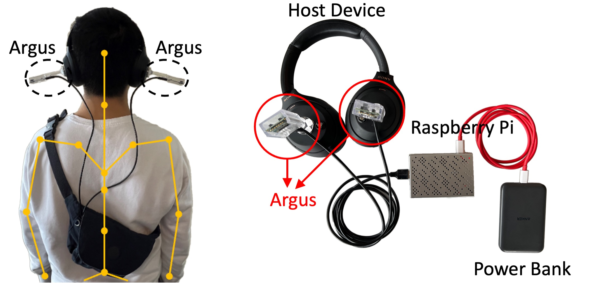
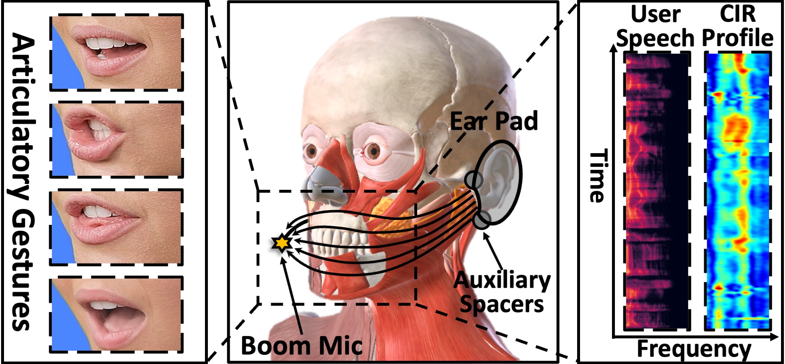

I am a Postdoctoral Fellow in the Department of Information Engineering at The Chinese University of Hong Kong (CUHK), advised by Prof. Guoliang Xing (ACM Fellow, IEEE Fellow). Before join CUHK AIOT lab, I obtained my Ph.D. degree from the Department of Computer Science at City University of Hong Kong (CityU), supervised by Prof. Weitao Xu (IEEE Senior Member) and co-supervised by Prof. Xiaohua Jia (IEEE Fellow), I also work closely with Prof. Tianxing Li. I received the ACM SenSys'25 Best Paper Honorable Mention Award, ACM MobileHCI'24 Honorable Mention Award, and IEEE PerCom'23 Mark Weiser Best Paper Award.
My research lies at the intersection of Mobile Sensing and Human-Computer Interaction — with a special focus on wearable and wireless sensing systems, software-hardware co-design, health and AI — to enable novel, secure, and user-friendly applications.
[2025/08] Glad to be invitied as a TPC member of ICPADS 2025. Welcome to submit papers!
[2025/07] News! My PhD thesis has been recognized with the Outstanding Research Thesis Award by CityU!
[2025/07] News! Our paper PricoEye is accepted by UIST'25 (unanimously accepted). I will showcase our live demo and deliver the paper presentation in Busan, Korea in Sep. 2025. Find me at the venue for a chat!
[2025/05] News! Our paper Argus received the Best Paper Honorable Mention Award at SenSys 2025. 5 out of all submissions
[2025/01] Our paper Argus is accepted by SenSys'25. I will present this paper in Irvine, CA in May. 2025.
2025[UIST'25] PricoEye: The Eye of Primary Colors for Fast and Convenient 3D Reconstruction of Fine-grained Palmprint on Smartphones Di Duan*, Kaicheng Xiao*, Lixing He, Wei Gao, Guoliang Xing [C]The 38th ACM Symposium on User Interface Software and Technology accpetance rate: 22.2%
CORE ACCF A#SIGCHI#SIGGRAPH
[SenSys'25] Argus: Multi-View Egocentric Human Mesh Reconstruction Based on Stripped-Down Wearable mmWave Add-on Di Duan*, Shengzhe Lyu*, Mu Yuan, Hongfei Xue, Tianxing Li, Weitao Xu, Kaishun Wu, Guoliang Xing [C]The 23rd ACM Conference on Embedded Networked Sensor Systems accpetance rate: 19.1%üèÜ Best Paper Honorable Mention Award (5/235)[link]
CORE A*CCF BBest Paper Honorable Mention#SIGBED#SIGMOBILE
2024[MobiSys'24] F2Key: Dynamically Converting Your Face into a Private Key Based on COTS Headphones for Reliable Voice Interaction Di Duan, Zehua Sun, Tao Ni, Shuaicheng Li, Xiaohua Jia, Weitao Xu, Tianxing Li [C]The 22nd ACM International Conference on Mobile Systems, Applications, and Services accpetance rate: 16.3%
CORE ACCF B#SIGMOBILE
[IMWUT/UbiComp'24] EarSE: Bringing Robust Speech Enhancement to COTS Headphones Di Duan, Yongliang Chen, Weitao Xu, Tianxing Li [J/C]ACM on Interactive, Mobile, Wearable and Ubiquitous Technologies
CORE A*CCF A#SIGMOBILE#SIGCHI
[MobileHCI'24] Medusa3D: The Watchful Eye Freezing Illegitimate Users in Virtual Reality Interactions Aochen Jiao*, Di Duan* (*co-first authors), Weitao Xu [C]The ACM International Conference on Mobile Human-Computer Interaction accpetance rate: 32.6%üèÜ Honorable Mention Award (3/141)[link]
CORE BCCF BHonorable Mention Award#SIGCHI
2023[PerCom'23] EMGSense: A Low-Effort Self-Supervised Domain Adaptation Framework for EMG Sensing Di Duan, Huanqi Yang, Guohao Lan, Tianxing Li, Xiaohua Jia, Weitao Xu [C]The 21st International Conference on Pervasive Computing and Communications accpetance rate: 16.9%üèÜ Mark Weiser Best Paper Award (1/159)[link]
CORE A*CCF BBest Paper Award#IEEE
Other Publications
2025[TMC] Mitigating Tail Latency for On-Device Inference with Load-Balanced Heterogeneous Models
Mu Yuan, Lan Zhang, Di Duan, Liekang Zeng, Miao-Hui Song, Zichong Li, Guoliang Xing, Xiang-Yang Li [J]IEEE Transactions on Mobile Computing
[SIGCOMM'25] SCX: Stateless KV-Cache Encoding for Cloud-Scale Confidential Transformer Serving
Mu Yuan, Lan Zhang, Liekang Zeng, Siyang Jiang, Bufang Yang, Di Duan, and Guoliang Xing [C]The ACM SIGCOMM 2025 Conference
[INFOCOM'25] iRadar: Synthesizing Millimeter-Waves from Wearable Inertial Inputs for Human Gesture Sensing
Huanqi Yang, Mingda Han, Xinyue Li, Di Duan, Tianxing Li, and Weitao Xu [C]The 2025 IEEE International Conference on Computer Communications
2024[TMC] Scenario-Adaptive Key Establishment Scheme for LoRa-enabled IoV Communications
Huanqi Yang, Di Duan, Hongbo Liu, Chengwen Luo, Yuezhong Wu, Wei Li, Albert Y. Zomaya, Linqi Song, Weitao Xu [J]IEEE Transactions on Mobile Computing
[MobiCom'24] RF-Egg: An RF Solution for Fine-Grained Multi-Target and Multi-Task Egg Incubation Sensing
Zehua Sun, Tao Ni, Yongliang Chen, Di Duan, Kai Liu, Weitao Xu [C]The 30th Annual International Conference On Mobile Computing And Networking
[TOSN] mmSign: mmWave-based Few-Shot Online Handwritten Signature Verification
Mingda Han, Huanqi Yang, Tao Ni, Di Duan, Mengzhe Ruan, Yongliang Chen, Jia Zhang, Weitao Xu [J]ACM Transactions on Sensor Networks
[CSCAIoTSys] EarDA: Towards Accurate and Data-Efficient Earable Activity Sensing
Shengzhe Lyu, Yongliang Chen, Di Duan, Renqi Jia, Weitao Xu [W]CPS-IoT Week 2024 Workshop on Coupling of Sensing & Computing in AIoT Systems
[SenSys'24] Myotrainer: Muscle-Aware Motion Analysis and Feedback System for In-Home Resistance Training
Yuting He, Xinyan Wang, Mu Yuan, Di Duan, Doris S. F. Yu, Guoliang Xing, Hongkai Chen [D]The 22nd ACM Conference on Embedded Networked Sensor Systems üèÜ Best Demo Runner-up Award[link]
Selected Projects
[UIST'25] PricoEye: The Eye of Primary Colors for Fast and Convenient 3D Reconstruction of Fine-grained Palmprint Di Duan*,
Kaicheng Xiao*,
Lixing He,
Wei Gao,
Guoliang Xing
[paper] [cite] [slide] [demo] [hardware]
PricoEye achieves ubiquitous, portable, and ultra-low-cost 3D micro-texture reconstruction technology on smartphones. Far from being a mere patchwork, it condenses the essence of many fields and tightly couples the knowledge from mobile systems, embedded design, graphics, interaction, and form factor design.

[SenSys'25] Argus: Multi-View Egocentric Human Mesh Reconstruction Based on Stripped-Down Wearable mmWave Add-on Di Duan*,
Shengzhe Lyu*,
Mu Yuan,
Hongfei Xue,
Tianxing Li,
Weitao Xu,
Kaishun Wu,
Guoliang Xing
[paper] [cite] [slide]
üèÜ Best Paper Honorable Mention Award (5/235)
Argus is the first to investigate multi-view egocentric HMR based on stripped-down mmWave radars in a multi-view configuration. Compared to conventional frontal-view solutions, it addresses several pain points, such as restricted sensing range and occlusion issues.
[MobiSys'24] F2Key: Dynamically Converting Your Face into a Private Key Based on COTS Headphones for Reliable Voice Interaction Di Duan,
Zehua Sun,
Tao Ni,
Shuaicheng Li,
Xiaohua Jia,
Weitao Xu,
Tianxing Li
[paper] [cite] [slide]
F2Key is the first earable physical security system based on COTS headphones that enables several security-related applications, such as artifacts anti-counterfeiting, speech manipulation/deepfake detection, defence against voiceprint-based attacks.

[IMWUT/UbiComp'24] EarSE: Bringing Robust Speech Enhancement to COTS Headphones Di Duan,
Yongliang Chen,
Weitao Xu,
Tianxing Li
[paper] [cite] [slide]
EarSE is a pioneer in exploring boom mic sensing, for the first time utilizing COTS headphones and boom/modular microphones to establish a stable acoustic sensing field across the user's face. It filters out ambient noise to obtain the wearer's clean speech in a multi-modality manner.
[PerCom'23] EMGSense: A Low-Effort Self-Supervised Domain Adaptation Framework for EMG Sensing Di Duan,
Huanqi Yang,
Guohao Lan,
Tianxing Li,
Xiaohua Jia,
Weitao Xu
[paper] [cite]
üèÜ Mark Weiser Best Paper Award (1/159)
EMGSense framework addresses the biological heterogeneity problem in cross-domain deployment of EMG-based applications in a low-effort manner, combining domain adaptation and self-supervised learning techniques.
![[link]](award/SenSys25_BestHonorable.jpg){kind=link}
![[link]](award/MobileHCI24_Honorable.jpg){kind=link}
![[link]](award/PerCom23_Best.jpg){kind=link}
![[link]](award/SenSys24_Demo.jpg){kind=link}